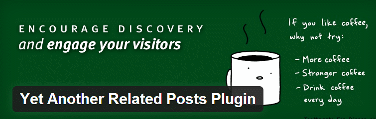
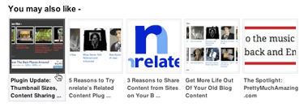
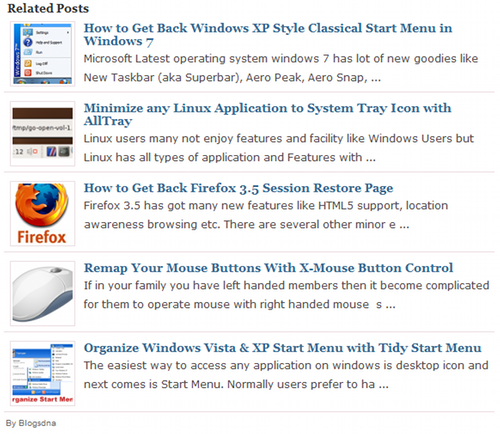

Displaying related posts on your website has several advantages, such as:
1) It reduces bounce rate – Visitors have option to read articles related to the one, which they are reading so it would help you to keep low bounce rate as there are more chances that readers will refer them. Use Thumbnails as they get attention easily compared to the list style related posts.
2) Increase in traffic – People find most relevant content to the one they are reading so if they like your content then there is no way they are gonna leave without reading them.
3) SEO benefits – Internal links to related content helps in improving On page SEO. It isn’t always true, you have to figure out whether the plugin is displaying posts without java scripts, if its using scripts then search engine would not be able to detect those links.
Best WordPress plugins
1) Yet Another Related Posts Plugin (YARPP)

This is one of the best WordPress plugin so far, wait!! I’m not the only one who is saying this when Matt Cutts (Google webspam team’s head) listed out few powerful plugins to display related posts, he mentioned this plugin at the top. You can do a lot with this plugin – It has option to display list style posts or posts with thumbnails. Moreover, it comes with a related posts widget, which you can embed in sidebar or footer, cool huh!. Get the plugin from here. There are numerous options which you can customize as per your need such as number of posts to display, where to display (page, posts or homepage), with or without thumbnails, horizontal or vertical display or manual display (use of single line of code in your template where you want to show the posts).
2) NRelate Plugin

This is one of the most popular plugin among bloggers because of its cool designs and styles, there are number of inbuilt awesome style which you can select right away from your plugin settings and it would be switched to the select style in no time. You can choose to display related posts with javascripts (stable and fast but no search engine visibility) or without it (SEO benefits but slow compared to java-scripts display. The only disadvantage of it is that its not always compatible with your themes and plugin, however the nrelate team has provided solutions to fix any issues. Below are the links which has provided workarounds to the compatibility issues.
External links:
Download page: nrelate related content plugin
nrelate theme compatibility – Thesis, Woothemes, Genesis.
nrelate plugin compatabilty – W3 total cache and others.
3) Wp-Thumbie – Related Posts with thumbnails for WordPress

This is also a good plugin but it has outrun by first two plugin, however if you want list style display with excerpt then this plugin can be a good choice for you. unlike nrelate it doesn’t have any compatibility issues with any other plugin or theme.
4) Outbrain
Outbrain is a third party content discovery platform. Which provides plugins for displaying related posts on any platform (WordPress, Joomla, Blogger etc.). It also provides java script integration which can be used on any platform in order to show related content or similar posts. With the help of this plugin you can also earn money by choosing to show sponsored posts along with the related posts.
I have tried all of the above 4 plugins and they work good. YARPP is one of my favorite. Currently I’m not using any plugin, I’m displaying with the help of a code, which I manual fixed in my template.
There are few other plugin which I haven’t try but they are worth mentioning. Here is the list of them –
Other Plugins
- Linkwithin – free no signup required.
- Related Posts thumbnails – It looks a cool plugin with good rating but has not been updated in last 2 years. I’m not sure whether it still works with the lastest version of WordPress.
- Similar Posts
- WordPress related posts – It gives you statistics on click through rates, it also provides several styles. I didn’t mention it in above list just because I didn’t use it. It is worth trying this plugin. It seems a bit different compared to other plugins, I will give it a try and will share the experience with you all.
That’s all I have for this topic. Do let us know which method/plugin you are using to show related posts with thumbnails. Also, please let us know if you faced any issues with any of the above mentioned plugins.
Leave a Reply